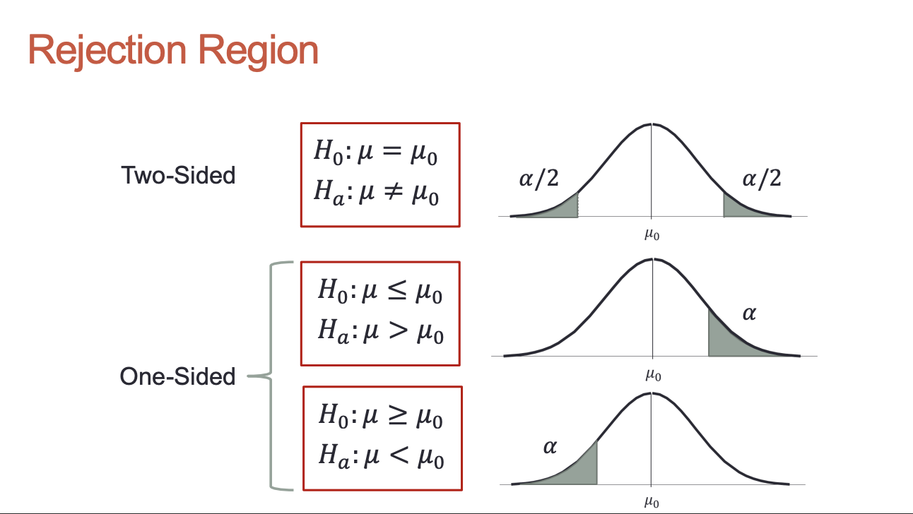
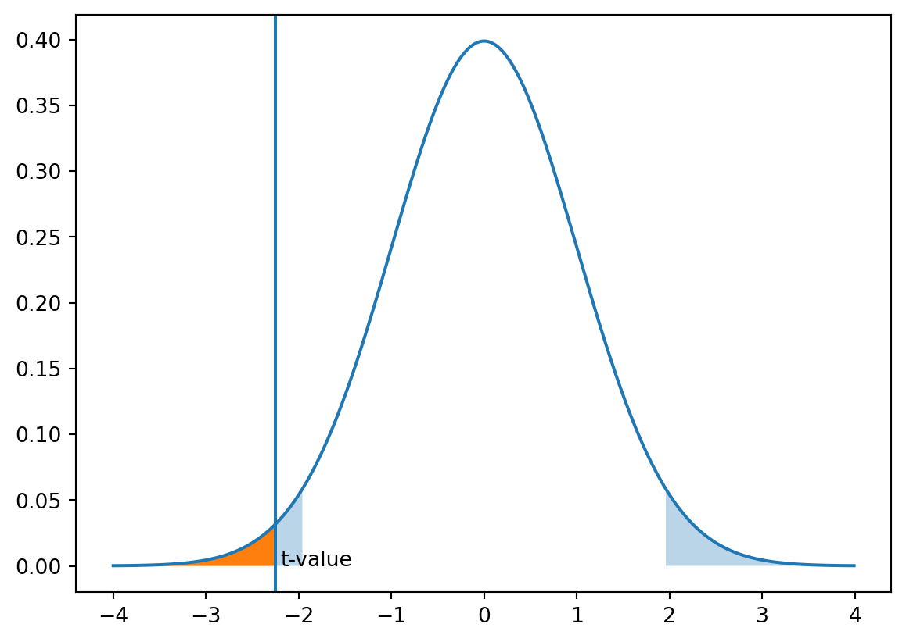

According to the CLT, the the mean has a sampling distribution that follows a Normal distribution as long as the sample size is large enough.
Let’s take the average age of our customers as an example. Initially, we believe that the average age of our customers is \(\mu = 25\) years old with standard deviation \(\sigma = 10\).
The first two general forms are one-sided tests while the last is a two-sided test.

Reject Regions
When we have probabilities in the rejection region, we are no longer confident that our null hypothesis suffices. We are led to reject the null hypothesis at a certain confidence level that we have chosen.
For sample means, we need the t-distribution due the unknown values of the population standard deviation:
\[
t = \frac{\bar{x} - \mu_0}{(\frac{s}{\sqrt{n}})}
\]
For sample proportions, we use the normal distribution:
\[
z = \frac{\hat{p} - p_0}{\sqrt{\frac{p_0(1 - p_0)}{n}}}
\]
5 P-Values
After calculating the test statistic, we calculate the probability that we got the information we did from our sample, assuming that our null hypothesis is true.
P-value is the probability we got our sample, or a sample more extreme, under the null hypothesis.
If p-value is low, it implies our sample from the population is extremely rare if we assume that null hypothesis is true. We are led to question the validity of the null hypothesis.
6 Significance Level
When we do a hypothesis test we select a significance level, \(\alpha\), such that if the p-value is less than or equal to \(\alpha\) the value of the test statistic is in our rejection region.
Code
mean =0sd =1alpha =0.05x_start = mean -4* sdx_end = mean +4* sdstep =0.01x = np.arange(x_start, x_end, step)y = norm.pdf(x, mean, sd)crit_value = norm.ppf(1- alpha /2, loc=mean, scale=sd)y_crit = norm.pdf(crit_value, mean, sd)plt.fill_between(x, y, where=y < y_crit, alpha=0.3)plt.fill_between(x, y, where=x <-2.25)plt.axvline(-2.25)plt.text(-2.2, 0, 't-value')plt.plot(x, y)

Reject \(H_0\) if p-value \(\leq \alpha\)
7 Errors in Hypothesis Test
Hypothesis tests depend on sample data therefore they may not necessarily be accurate.
7.1 Type I Error
Reject the null hypothesis when the null hypothesis was actually true (False rejection)
Probability of making a Type I error in a hypothesis test is called the significance level
7.2 Type II Error
Accepting the null hypothesis when the null hypothesis was actually false (False acceptance)
Probability of not making a Type II error in a hypothesis test is called the power
Difficult to control Type II error
Can only control for Type I or Type II at a time
8 Test for Means (One Tailed Example)
You work for a business school as an analyst.
The dean of the business school just went on record saying that students who just graduated average at least $3000 per month in salary.
With a significance level of 0.05, conduct a hypothesis test on this claim.
If confidence interval around \(\bar{x}\) doesn’t contain the null hypothesis \(\mu_0\) then we do reject \(H_0\) as \(\bar{x}\) is in rejection region
9.1 Conditions
The hypothesis test is two-sided
\(C = 1 - \alpha\) where \(C\) is the confidence level and \(\alpha\) is the significance level